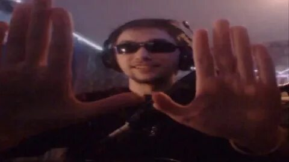
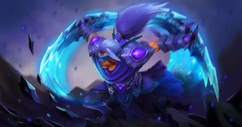

лор серёги
как-то раз Серёжа создал акаунт на "ютубе" и "твиче" и потихоньку начал набирать популярность а после познакомился с Дахаком и сказал заместо "спасибо за донат"сказал"спасибо за дахак"
серёга создатель множества мемов и очень творческая личность он создатель множества хитов например "мой байк","тп на аме","гимн дахака"ёщё пират лучший авантюрист и лучший игрок на анти маге
пояснение Дахак это создатель киберспортивной команды и киберспортсмен

это серёга
он крут

а это его сигнатурка
а вот лор крипа
Монахи Турстаркури наблюдали за неровными долинами, раскинувшимися под их горным монастырем, в то время, как вторженцы, волна за волной, набегали на стоявшие у подножья королевства. Аскетичные, прагматичные, они пребывали в медитации, не знавшей никаких богов, засев в своем отрешенном от суетного мира высокогорном гнезде. Потом грянул легион Мертвого бога — крестоносцы, уничтожающие все местные культы и заменяющие их своей верой, родом из земель, известных лишь безжалостностью и тысячелетними войнами. Легионы мертвецов осадили Турстаркури. Две недели монастырь едва сдерживал натиск врагов, а те немногие монахи, что решили разузнать, в чем дело, восприняли нападение как попытку бесовских иллюзий отвлечь их от медитации. Они были убиты прямо на своих шелковых подстилках. Выжил лишь один молодой послушник — пилигрим, пришедший в поисках мудрости, но еще не принятый в монастырь. С ужасом он смотрел за тем, как монахи, которым он еще недавно подавал чаи и травы, гибли на своих местах, а потом присоединялись к рядам служителей Мертвого бога. Схватив охапку ценнейших священных писаний, он бежал в более безопасное место, поклявшись не только искоренить армию колдунов Мертвого бога, но и положить конец любой, какой бы то ни было, магии.
а вот это отец "РУССКОЙ ДОТЫ"